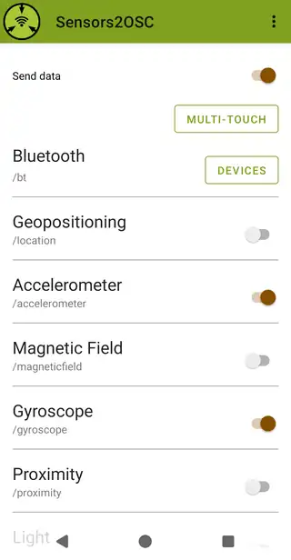
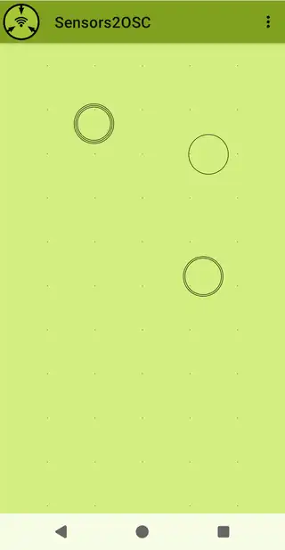

Sensors2OSC
صوت وفيديو وموسيقى
Read sensor data from your phone and send them to a receiver via Open Sound Control (OSC). Typical use case is controlling a music application from your phone or tablet.
✓ ترخيص مفتوح (MIT) · آخر تحديث: 2026-09-25
0.17.8الإصدار
1.5 MBالحجم
MITالرخصة
Open in Kanzتحميل APK (1.5 MB)
Download APK
SHA-256: b013ea21b280ec6d18c6f7adb7a1a23b6f56a5de48dbfd77649db2bd9384327a


تطبيقات تانية لنفس المطوّر (2)
More apps from this developer: org.sensors2
امسح الكود لفتح صفحة التطبيق
Scan to open this app page
لو كنز مش متثبت عندك: نزّل متجر كنز.
Not installed? Get the Kanz store.